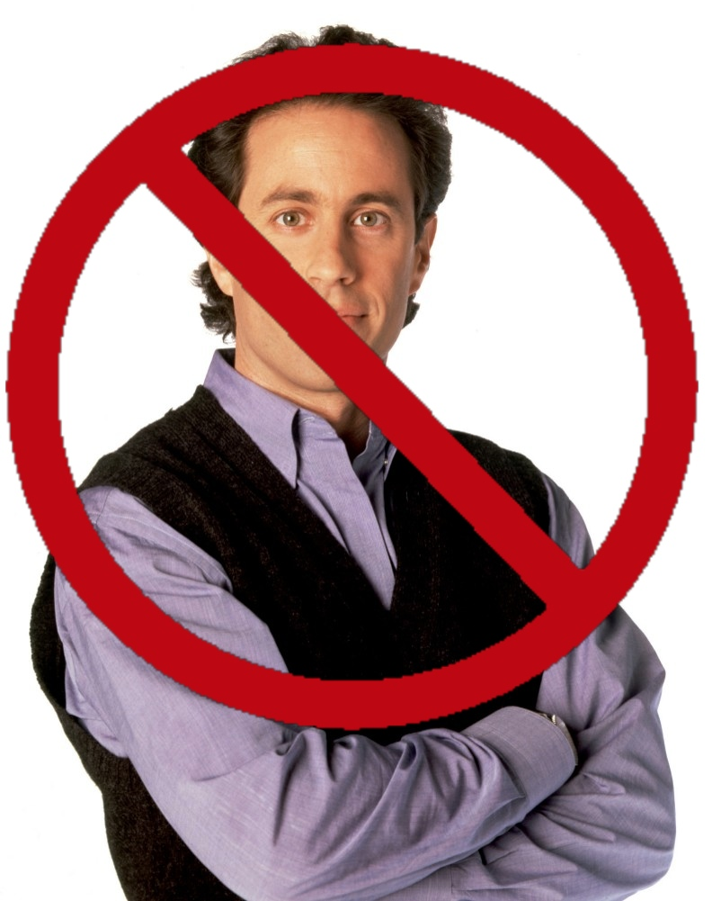
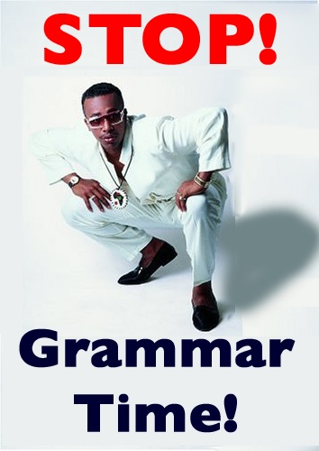
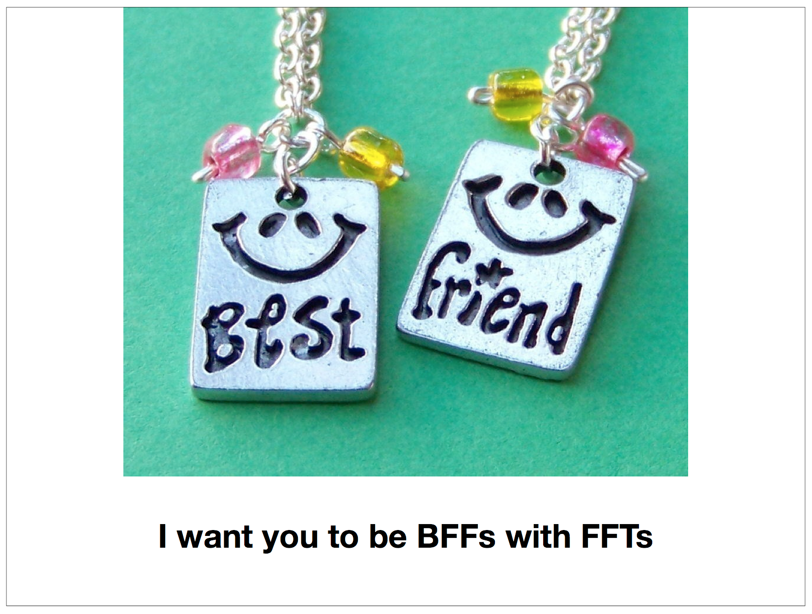
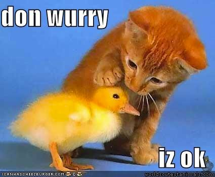
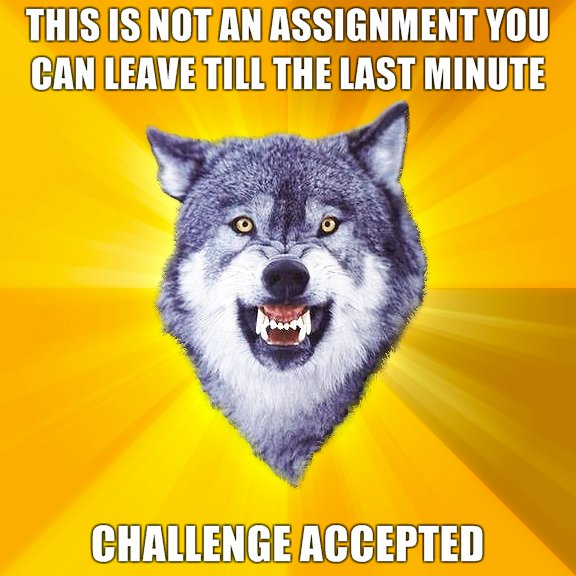
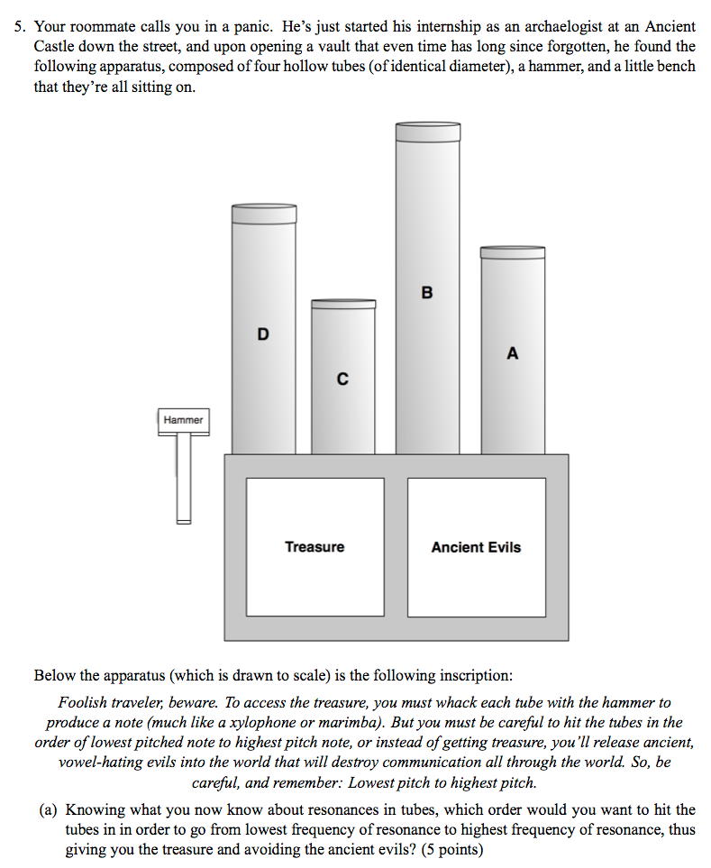

---  ## Putting the LOL in Classroom Learning Will Styler --- # Who are you? --- ### Today's Plan - The Benefits of using humor - Common fears about classroom humor - Pitfalls to look out for - Where to draw the line - How to work humor into your teaching --- # What can humor win you? --- ## Humor can improve learning --- ## What's the deal with "fish" -> "fishes"? --- ## Epenthesis When a sound (usually a vowel) is introduced to a word in order to prevent a linguistically undesirable combination. - dish + s = /dɪʃz/, /ʃz/ is difficult to produce. --- ## Language is a lot like high-school drama --- ### Epenthesis [](http://brushup-english.blogspot.com) --- ### Epenthesis "OMG, there is NO WAY that /ʃ/ and /s/ are going to get together. I'm just going to have /ɪ/ show up to block that." --- ### Humor can increase learning - Humor can make an emotional connection for students. - We've all been epenthesized. - Based on studies ([here](http://www.facultyfocus.com/articles/effective-teaching-strategies/humor-in-the-classroom-40-years-of-research/) and [here](http://www.apa.org/monitor/jun06/learning.aspx)), it seems to help with recall. --- ### Humor can make concepts memorable * Incorporating your material into jokes gives people more to grab onto * Emotion helps with recall! ---  ---  --- ### Humor can reduce stress * How much would test scores improve if your students could have a good laugh mid-exam? * [A lot!](http://www.apa.org/monitor/jun06/learning.aspx) --- ### Humor can engage students * People want to know why people are laughing. So they'll listen * Nothing breaks up monotony like a good meme or LOLCat. * Funny questions get better responses * If a student tells one of your jokes outside the classroom, you've infected them. --- ## Humor can make ideas spread * c.f. [LOLMythesis](http://lolmythesis.com) --- > Theoretically, bees are dying in the midwest because of synergistic chemical exposures that cause their immune glue to say “WE GIVE UP! COME ON IN” to pathogens. - MS Biology, Chatham University --- > People trust their government more when they voted for the guy in charge. - Sociology/Political Science, Penn State --- > "It appears, based on experimental evidence, that vowel perception is pretty much magic." - Linguistics, University of Colorado --- ### Humor can make you memorable and help your Student Evaluations --- <img class="wide" src="img/morepuns.png"> --- ## What have I missed? --- # Fears about using humor --- ### "... but I'm not funny" * Doesn't matter. * Use other people's humor * Partial credit is given for sincere effort. --- ### "What if my joke fails?" * "That was funnier than you all throught it was" * The Rimshot/Sad Trombone key * Move on! You can't win them all. --- ### "My students won't take me seriously!" * Do they now? * Lasting respect comes from knowledge and fairness, not a stiff upper lip * Levity provides a contrast for turning up the fear --- ### "I don't want to look ridiculous!" * You're going to, sooner or later. * It's often useful to be able to be ridiculous * *A wizard is never late. He always arrives precisely when he means to.* - Gandalf --- ### So, don't worry! - It'll be awesome - ... usually --- # Pitfalls of using humor --- ### They might take it seriously. -If you tell them that the answer to everything is 42, they may answer everything with "42". - Seriously, watch out. Make sure they know it's a joke, or they'll study it. - Consider marking joke answers on exams --- ### Be cautious picking on yourself - You can make fun of yourself, but don't undermine yourself. - "Oh well, looks like 'scatterbrained academic' is a thing" - "Oh well, looks like I don't know enough to teach this class!" --- ### Timing is everything - Humor in the wrong place can be offensive. - If there's already tension, avoid humor. --- ### Be careful with swearing and profanity - It can push the lines of professionalism - ... but it's not actually against any rules --- ### Don't overdo it Too much humor is distracting. > ["Students don't necessarily want Jerry Seinfeld as their instructor,"](http://www.apa.org/monitor/jun06/learning.aspx) she says. "They want appropriate humor that is relevant, lightens the mood and makes the information memorable." ---  --- ### "... but they might report me!" - Let's talk about that --- # Where to draw the line --- ### Don't target specific students - "Sorry, Physics Majors, speech is way cooler" - "Minimalist Syntacticians! Amirite?" - "That theory is dumber than Megan's hat" - "Wow, no wonder you messed up last week's homework Mark!" --- ### Humor about protected classes is dangerous - p(funny) < p(offensive) --- ### Avoid humor about [protected classes](https://ophd.ucsd.edu/faq/index.html) - Race - Color - National Origin - Religion - Sex - Gender Identity/Expression - Sexual Orientation --- ### Avoid humor about [protected classes](https://ophd.ucsd.edu/faq/index.html) - Physical or mental disability - Medical Conditions - Genetic Information and Ancestry - Marital Status - Pregnancy - Age - Citizenship or Immigration Status - Veteran status --- ### Be careful with cute analogies too! - It's probably best not to even touch protected classes. --- ### Be careful with mock accents --- ### Respond appropriately to students' humor * Sometimes, students can be hurt by what you *don't* say --- ## What if somebody is hurt or offended? --- ### If a student is hurt/offended by something... * Don't try to convince them that the joke *was* funny * Don't respond with more humor to minimize the concern * Let them know their concerns are heard * Let them know what the point of the humor was in your class * Explain that it wasn't your intent to be hurtful * **Don't minimize their concerns** --- ### OPHD is not out to get you! * Most responses related to a one-time comment are simple discussions * Issues surrounding humor germane to the course are viewed more favorably * They appear to have a sense of humor! <!-- D&H Notes - Don't touch protected classes - Religion, national origin, imitation of accents - Teaching something germane to the course if needed, that's different than somebody in ECON - Don't target specific students - Student in class was referred to as "Monica Lewinsky" - Another student makes a joke - "I'm upset with the faculty member for not intervening when I was being mocked" - If a student confronts a faculty member after class - Respond! - If a student feels X wasn't funny, don't try to use more humor - Don't try to convince the student that X was actually funny - Handle with respect - Let the student know that the concerns are heard - Explain the intended point without humor - Explain lack of intent to hurt - Don't minimize the concern --> --- ### *Have you seen humor cross that line?* --- ### Be careful - ... but the benefits outweigh the dangers! --- # Where can you work humor in? --- ## Lectures --- ### Set the tone * Starting your slides with a joke raises the mood when students are walking in --- ### Break up monotonous material with a joke or funny picture ---  --- ### Funny pictures to reinforce concepts --- ### Humor reinforces learning!  ---  --- ### Humorous analogies help learning --- ### Crappy puns --- > A photon checks into a hotel. The front desk asks if it has any luggage. It replies "No, I'm traveling light" --- > The past, the present and the future all walk into a bar. It was tense. --- > What did the perscriptivist owl say? Whom whom. --- ### What are some other good uses of humor in lectures you've seen? --- ### Emails to the class and announcments * Include a good/bad joke to make them want to read the email * Send out funny articles/memes related to the course materials --- ## Homework and Exams --- ### Preparatory Humor ---  ---  --- ### Freddy McPolarbears [](http://blog.corbis.com/2013/paul-souders-photographing-polar-bears/) --- > "Freddy McPolarbear takes out a loan at TundraBank for $5000. If the interest rate is 5%..." --- > "Freddy McPolarbear stumbles upon a group of people speaking an unfamiliar language. Before eating them, he wants to analyze the sound system they're using...." --- > "Will, during his weekend job as Batman, jumps off a 50 foot building. Assuming he weighs 220 pounds, how fast will be be going when he lands?" --- ### Zany multi-choice answers --- The smallest unit of contrastive sound in a language is called a... a) Phone b) Allophone c) Phoneme d) Diphone e) iPhone --- ### (Make sure it's not a valid answer, and mark it.) --- ## Elaborate humorous questions ---  --- You’ve broken bad, and are now the vocalic consigliere in the Phonetic Mafia. Don Gioschwanni, the mob boss, read an article that elk are more frightened when they hear calls from elk with very low formants, so he tells you to recruit a new enforcer with formants that are as low as possible. One of the underbosses brings you the three candidates. First, there’s Carlos "the Cougar", a young man, only 5’4”, but he’s got the breathiest voice you’ve ever heard. Then, there’s Sammy "the Smasher", 5’11” and almost 400lbs of solid muscle, as wide around as Frankie is tall. Finally, you’ve got Johnny "the Giraffe", who’s 6’8” and has the longest neck you’ve ever seen. (a) Which of the three choices is likely to have the lowest formants? (10 points) --- ### Activity: Write a humorous homework or test question categories which still checks knowledge in your field. *If you get stuck, work with your neighbor* --- ## *Where else is humor useful?* --- # Wrapping up --- ### Be careful with your humor - Don't target specific students - Mind the timing - Avoid protected classes - Be responsive and caring if a joke hurts somebody - Don't be Jerry Seinfeld. --- ### Humor is good - It reduces stress - In encourages engagement - It helps people learn the subject matter - It makes you more awesome/memorable as a teacher - It makes your class more fun! --- ## Go forth and cause LOLing! [](http://blog.corbis.com/2013/paul-souders-photographing-polar-bears/) --- <huge> Thank you! </huge> Will Styler - will@savethevowels.org